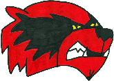

HIGH SCHOOLS DEBATE DROPPING A CONTROVERSIAL MASCOT
The Washington, D.C., NFL team is not the only one facing questions about using the name Redskins. High schools across the country are debating whether to continue using the controversial mascot.
Story
by Kelyn Soong
Interactives and Design
by Sean Henderson and Angela Wong
by Kelyn Soong
Interactives and Design
by Sean Henderson and Angela Wong
Published April 2, 2013

Capital News Service has identified 62 high schools across the country that have the Redskins as their mascot. Click on a logo for information about the school. Double click to fly in to the location. Press the zoom out/refresh map button in the lower left corner to return to the original view.
Capital News Service has identified 62 high schools across the country that have the Redskins as their mascot. To view this map as an interactive, please use a laptop or desktop computer.
Capital News Service has identified 28 high schools across the country that have changed their mascot from the Redskins. Click on a logo for information about the school. Double click to fly in to the location. Press the zoom out/refresh map button in the lower left corner to return to the original view.
Capital News Service has identified 62 high schools across the country that have the Redskins as their mascot. Many of the schools ‒ more than 40 percent ‒ have debated whether or not the name should be changed.
Capital News Service has identified 28 high schools across the country that have changed their mascot from the Redskins within the past 25 years. Iowa Falls High School changed their name to the Redhawks in 1999 and then in 2004 merged with Alden High School and became the Cadets.
Six months after Wiscasset High School became the Wolverines, the varsity boys basketball team showed up for a home game wearing t–shirts featuring the school’s old mascot.
When the players walked into the gym wearing white t‐shirts emblazoned with the word Redskins, the crowd gave the team ‒ and the t-shirts ‒ a standing ovation.
The game in January 2012 provided the citizens of Wiscasset, a small town on the Maine coast, one last chance to cheer for a controversial mascot that many considered an important link to the community’s past.
After months of contentious debate, the regional school board voted in January 2011 to drop the name, siding with those in the community who considered the moniker a racist anachronism over the majority of Wiscasset residents who favored tradition.
“Some felt like it was the last piece of the past they were hanging onto,” said Wiscasset High School principal Deb Taylor, a 1989 graduate of the school. “The power of the desire to go back to the past is very strong.”
Though the school has been officially represented by a red and black wolverine for nearly two years, some in the community have refused to let go of the Redskins.
THE REDSKINS DEBATE
As the debate over changing the name of the Washington Redskins intensifies in the nation’s capital, similar debates are dividing Wiscasset and other towns where fans of local high schools cheer for their own version of the Redskins.
Some of the schools that use the controversial name have been pulled into the national debate by the Washington Redskins, as part of the team’s defense of its continued use of a name that is often considered to be a racial slur.
In February, the Washington Redskins posted a series of stories on the team website highlighting four high schools that have Redskins mascots. The team quoted principals, coaches and athletic directors at those schools who said they were proud of the name Redskins.
“We did a little research. Some people might not have been inclined to do this research, but we went to a site, MaxPreps.com. We figured out there are 70 different high schools in the United States, in 25 states, that use the name Redskins,” Larry Michael, the team's senior vice president and executive producer of media, said on “Redskins Nation,” the show he hosts on Comcast SportsNet.
A Capital News Service analysis of the MaxPreps high school mascot data found that the Washington, D.C., NFL team likely overstated the number of schools that use the name Redskins. The MaxPreps database included schools that have stopped using the mascot, have closed or were listed twice.
Capital News Service confirmed that 62 high schools in 22 states currently use the Redskins name, while 28 high schools in 18 states have dropped the mascot over the last 25 years. (More information on our findings).
The four schools highlighted on the Washington Redskins’ website do not accurately represent the level of debate over the mascot in communities across the country where the name Redskins is used, Capital News Service found.
At more than 40 percent of the schools, superintendents, principals, athletic directors, administrative assistants or other school representatives said that there have been local efforts to change the name. Eight more schools could soon join the 28 that have already dropped it.
A school board in upstate New York voted in March to retire the name Redskins at Cooperstown Central School at the end of this school year. In Washington state, Port Townsend High School is actively considering dropping the name. And in Michigan, the state Department of Civil Rights has filed a complaint with the U.S. Department of Education that could eventually force six Michigan schools called the Redskins to change their names.
At nearly 60 percent of schools that use the name, school representatives said there have been no local efforts to change it. Capital News Service also found three schools with a majority Native American student population that embrace the term Redskins, underscoring the divergent views held by Native Americans about the controversial name.
Tony Wyllie, a Washington Redskins senior vice president and the team's chief spokesman, declined to comment on Capital News Service's findings.
The decision to stop using Redskins happened with little controversy at some of the 28 schools that have dropped the name over the last 25 years. In others, it created bitter divisions.
At some schools, students pushed for the change, conflicting with older alumni who viewed abandoning Redskins as taking away a part of their history. At others, concerned citizens brought the issue to the attention of local officials.
‘PIECE OF THE PAST’
In Wiscasset, the push for the name change started with a protest from a local Native American group.
For decades, athletes at Wiscasset High School competed as the Redskins. In August 2010, the Maine Indian Tribal‐State Commission wrote to the local school board arguing it was time for a change.
“Essentially [the term Redskins] is a symbol of genocide. I can’t believe any school would want to have that association,” said John Dieffenbacher‐Krall, executive director of the commission.
After months of contentious debate, the school board voted in January 2011 to force Wiscasset High School to immediately stop using Redskins, leaving the school’s athletes without an identity.
As a result of the board’s decision to ban the name, students staged a walkout to show their support for keeping the name. Wiscasset alumni also forcefully opposed getting rid of the Redskins name.
“The decision was made [mid-school year] and the reaction was strong and very angry,” Taylor said.
Taylor said she was a proponent of the change, but did not make her opinion public because of her position as the school’s assistant principal at the time.
In March 2011, in response to community outcry, the school board voted to allow Wiscasset High School to use Redskins again through the end of the school year. The school adopted a new mascot ‒ a Wolverine ‒ to begin using at the start of the following school year.
But the controversy around the name change did not fade. Fans refused to chant “Go Wolverines” the way they used to chant “Go Redskins.” And the boys basketball team wore Redskins t‐shirts to a game, which Taylor said was one of several “sabotaging efforts... to reinvigorate the Redskins after it had been removed.”
And even now, some in the community are hoping to bring back the Redskins.
NATIVE AMERICAN PERSPECTIVES
The debate over whether sports teams should use the name Redskins has simmered for decades. The Washington Redskins and many of the 62 high schools that use the name say that it is meant to honor Native Americans, not to disparage them.
But many Native Americans disagree. The National Congress of American Indians, the largest national organization of Native American tribes, has denounced the use of any “American Indian sports nicknames and imagery” and has stated that such use “perpetuates stereotypes of American Indians that are very harmful.”
Yet not all Native Americans oppose the term Redskins. Capital News Service identified three majority Native American high schools that use it proudly, including Red Mesa High School in Arizona.
“Being from Native American culture, [the term] is not derogatory,” said Tommie Yazzie, superintendent of the school district that oversees Red Mesa High School. He identified himself as a “full-blooded Navajo.”
Red Mesa High School is located on a Navajo reservation, and 99.3 percent of its students are Native American, according to the National Center for Education Statistics.
Yazzie said people on his reservation care about more pressing things than the use of the name Redskins.
“Education, public health ‒ those are the things we’re more concerned about, rather than whether a team name is appropriate,” he said.
Though he said it was acceptable for schools with majority Native American populations to use the name Redskins, he believes that non‐Native American schools should avoid using it.
“If you were to put this in an urban area where the population is basically white, unless there is a cultural connection, it would be inappropriate,” he said.
He was also troubled by the use of Native American war chants and gestures during sporting events, something that is common at other schools with Native American mascots.
“We don’t use those gestures and traditions. As Navajos we have respect for warfare. Warfare means taking a life. And when a young warrior goes out to battle, [the gestures and war chants] belong there,” he said. “When you come back into civilian life, you don’t take that back with you. You don’t use the same type of gestures and hollering and bring that back into a sporting event.”
‘HONORING THE INDIANS’
A Capital News Service analysis of National Center for Education Statistics data found that 50 of 62 schools that use the name Redskins are majority white, eight are majority Hispanic and one is majority black.
Thirty‒six schools told Capital News Service that the debate over the name has not reached their communities.
In Ohio, Indian Creek High School ‒ a majority white school - principal Steve Cowser said there has never been pressure to change the name Redskins, which the school adopted in 1993.
For him, the term represents honor and respect.
“I understand what happened in the past and why the word Redskins was given to them by the white man,” he said. “[But] in today’s society, when we use the name Redskins, we are honoring the Indians for their heroic efforts.”
At Ringgold High School, a majority black school in Louisiana, Principal Eric Carter said there has also been no community pressure to remove the name Redskins.
“If you show that your voice is in the majority then there would be some consideration,” Carter said, when asked how he would respond to a name change proposal.
PUSHING FOR A CHANGE
Though there are 62 high schools that use the name Redskins, the term has vanished from the collegiate landscape.
The last two colleges that used Redskins changed the name in the late 1990s. Miami University of Ohio changed from the Redskins to RedHawks in 1997 and the Southern Nazarene Crimson Storm dropped the name in 1999.
If the two universities had not changed their name by 2006, they would have been unable to play in the postseason under a NCAA policy adopted in 2005 that bans the use of Native American mascots by sports teams during its tournaments.
The postseason ban convinced colleges with mascots like Braves, Indians and Savages to become the Red Wolves, War Hawks, Mustangs or Savage Storm.
The policy made an exception for teams that have the consent of local Native American tribes like the Florida State University Seminoles.
At the high school level, there is no single national sports organization like the NCAA to pressure schools to abandon Native American mascots. But officials in a growing number of states are taking similar steps as the NCAA to force schools to change.
Wisconsin passed in 2010 the nation’s first state law banning public schools from using Native American names, mascots and logos. It left exceptions for schools that had the approval of local Native American tribes.
In 2012, the Oregon State Board of Education issued a ruling banning all Native American team names, mascots and logos. Affected schools must comply by 2017 or risk losing state funding.
Capital News Service was unable to find any teams that use the Redskins name in Wisconsin and Oregon. But six high schools in Michigan called the Redskins could soon be forced to change their names because of legal action by the state Department of Civil Rights.
The agency filed a complaint in February with the U.S. Department of Education’s Office for Civil Rights, asking the federal agency to issue an order prohibiting the use of “American Indian mascots, names, nicknames, slogans, chants and/or imagery” by the state’s schools.
The complaint named the six Michigan schools that use the Redskins along with 29 others that have Native American mascots. It also described the term Redskins as a “racial slur...[that] carries particularly negative connotations that accentuate the negative impact of associated stereotypes.”
The complaint stated that using Native American names and imagery, “creates a hostile environment and denies equal rights to all current and future American Indian students.”
There is little community support for dropping Redskins at Saranac High School, one of the six Michigan high schools with the name listed in the complaint, said Maury Geiger, superintendent of Saranac Community Schools.
“The [Michigan Department of Civil Rights] complaint was not filed because of a complaint from someone in Michigan,” he said. “That says something to me, that [the name Redskins] has been acceptable within our school and community.”
Over the last two decades, state education officials and state Native American commissions in Michigan, New Hampshire, New York, Nebraska and Maryland have passed resolutions strongly encouraging high schools to drop Native American mascots.
Last year, the Washington State Board of Education approved a resolution that urged its school districts to discontinue the use of Native American mascots. The resolution cited a 2005 American Psychological Association study that found that the use of Native American mascots, symbols and images have a negative effect on students by perpetuating misconceptions about Native American culture.
The Washington state resolution does not force schools to drop the names, leaving it to local officials to make a decision on their own.
AN UPCOMING VOTE
Andrew Sheldon, a former Washington, D.C., resident, is trying to get his local high school in Port Townsend, Wash., to drop the name Redskins.
When he moved to the state in 1996, he was disheartened to learn that Port Townsend High School had the same mascot as the professional team in his former city.
“It’s pretty much a civil rights issue. I think the benefit of the doubt should go to [people] that are offended by the word,” Sheldon said.
Last year, Sheldon sent a letter asking the school board to ban the name, resurrecting an issue that has lingered in the community since the early 1990s. His request prompted the school board to form a committee to discuss the issue. It includes school board members, alumni and members of local Native American tribes. The committee does not include students.
T.J. Greene, the chairman of the nearby Makah Tribal Council, said the tribe does not have an official position on the issue. “As a whole we wouldn’t say the name needs to be changed,” he said.
The board will decide whether to change the name in June, based on recommendations from the committee. Sheldon said he would pull his children out of the school system if they vote to keep it.
The issue has been voted on three times in the last 20 years by Port Townsend High School students, with the most recent vote in 2000.
The students elected to keep the name all three times.
This year, the decision will not be put to students, although Port Townsend High School athletic director Patrick Kane said they are being consulted.
Putting it to a vote in 2000 “caused a lot of tension in the school... and a lot of anxiety, stress and pressure on those on the committee,” he said.
STUDENTS INITIATE CHANGE
At Port Townsend, students were instrumental in keeping in place a name that had represented the school since the 1920s.
But at Cooperstown Central School in New York it was a small group of high school students that led the charge to retire the name Redskins this year. In the early 1980s and again in 2001, the school considered changing the name, but decided to keep it.
The students voted to change the name in February, pushing the local school board to make a decision on whether or not to drop it. The board held public forums to discuss the issue.
Some Cooperstown alumni lobbied the school board to keep the name, pointing to the tradition and history the name evoked, superintendent C.J. Hebert said.
But the Oneida Indian Nation, located near Cooperstown, argued that the name is offensive. As a gesture of goodwill, they offered to help pay for new team jerseys.
“These wonderful kids decided to discontinue the offensive name to our people. We just thought it was a courageous decision,” said Oneida Indian Nation representative Ray Halbritter.
The school board voted in March to retire the name by the end of the school year, making this the last season Cooperstown athletes will take the field as the Redskins.
School officials said they do not yet know how they will a choose a new mascot to replace the one that has represented Cooperstown Central School since the 1920s.
AN EASY TRANSITION
It took Sanford High School in Maine a month to choose a new mascot ‒ the Spartans ‒ after deciding in May 2012 to drop the Redskins.
The school’s civil rights team ‒ which consists of a faculty advisor and a core of 10 to 15 students ‒ recommended to the school board in spring 2011 that the name be dropped. And just as it had in Wiscasset, the Maine Indian Tribal-State Commission advocated for the change.
School leaders voted in May 2012 to officially retire the Redskins. But even before the vote, the school had already stopped using the Redskins logo on their jerseys, replacing it with an S for Sanford.
The students were anxious to adopt a mascot they could display proudly. “The joke was we were really just a big S,” principal Jed Petsinger said.
Students chose the Spartans over the Cardinals, Pride and Stampede.
“The transition has been really easy,” said junior Shae Horrigan, a school board student representative and a member of the cross country team. “It’s fun, [the new mascot] is everywhere now.”
Petsinger said he was impressed by how the community reached a consensus on the name change through civil discussion, in contrast to the events in Wiscasset.
“You can’t take away the history of the school... and [those in support of keeping the Redskins] knew it was time to have a [new] mascot for all the students to rally around,” he said.
A POTENTIAL RETURN
In Wiscasset, the debate over the Redskins has not subsided, even though a year has passed since the introduction of a new mascot. Opponents of the name change are still bitter about the decision to replace the name Redskins with Wolverines.
Wiscasset High School is in the process of withdrawing from the school district that forced the name change. School officials said they want to move because of a loss of school control over the curriculum and funding issues, not because of the name change.
But if the withdrawal is successful, principal Deb Taylor said there is a chance the Redskins mascot could return.
“There is speculation that if we were to withdraw, there would be grassroots efforts to restore the Redskins mascot,” she said. “It is very likely the issue arises again.”
To determine the number of U.S. high schools that have Redskins mascots, Capital News Service used data from MaxPreps.com, a high school sports statistics website. The Washington Redskins, citing the same data set, said there were 70 schools in 25 states that used the name.
By calling each school on the list, Capital News Service fact‒checked the MaxPreps data and found that the Washington Redskins had overstated the number of schools using the name. The MaxPreps data included eight schools that had closed; were no longer a high school; had switched to a new mascot; had dropped the mascot after merging with another school; had never been the Redskins; or were listed in duplicate entries.
Dustin Public Schools in Oklahoma ‒ listed as Dustin High School in the MaxPreps data ‒ is still the Redskins but no longer includes grades 9‐12. In 2011, Red Lodge High School in Montana became the Rams and Wiscasset High School in Maine switched to the Wolverines. In 2008, Cumberland High School consolidated with Evarts High School and Cawood High School to become the Harlan County High School Black Bears. In 2004, the Redskins of Gridley High School in Illinois merged with El Paso High School and are now the Titans. The Sullivan High School Redskins in Illinois are listed twice on the website. The Ramsey High School Rams and Lincolnwood High School Lancers in Illinois are listed with Nokomis High School on MaxPreps. Nokomis High School is currently the Redskins, but Ramsey and Lincolnwood have never been the Redskins.
Capital News Service confirmed that there are currently 62 U.S. high schools in 22 states with Redskins mascots. It cannot be said with certainty that only 62 use the name. It’s possible that some schools that use the Redskins name are listed in the MaxPreps data with a different mascot. And the MaxPreps data is incomplete. It includes 24,815 U.S. high schools, but does not list mascots for 3,413 of them.
Capital News Service conducted extensive Web research and telephone interviews in an attempt to locate other schools that use the name that were not included in the MaxPreps data. We were unable to find any. If you know of more schools with Redskins mascots, please contact us at CNSMaryland@gmail.com.
To determine the level of debate over the Redskins name in each community, Capital News Service asked superintendents, principals, athletic directors, administrative assistants or other school representatives at each school whether there had been any issues or controversies with the name or efforts in the community to change it.
Representatives at 26 schools told Capital News Service that there have been local efforts to change the mascot, while representatives at the other 36 said there have not.
Capital News Service built the list of schools that have stopped using the Redskins name by aggregating lists compiled by Native American groups that have pushed the Washington Redskins to change. We also conducted extensive research to find more schools that once used the name. We owe special thanks to a 1991 USA Today article (“Nicknames Across the USA”) that listed schools with Native American mascots by state.
Capital News Service then called each school to confirm that they had once been the Redskins, find out if they had changed mascots and, if so, in what year the change occurred. We confirmed that 28 schools in 18 states were once the Redskins, but now currently use another mascot. If you know of one we missed, please contact us at CNSMaryland@gmail.com.
Return to story
The game in January 2012 provided the citizens of Wiscasset, a small town on the Maine coast, one last chance to cheer for a controversial mascot that many considered an important link to the community’s past.
After months of contentious debate, the regional school board voted in January 2011 to drop the name, siding with those in the community who considered the moniker a racist anachronism over the majority of Wiscasset residents who favored tradition.
“Some felt like it was the last piece of the past they were hanging onto,” said Wiscasset High School principal Deb Taylor, a 1989 graduate of the school. “The power of the desire to go back to the past is very strong.”
Though the school has been officially represented by a red and black wolverine for nearly two years, some in the community have refused to let go of the Redskins.
THE REDSKINS DEBATE
As the debate over changing the name of the Washington Redskins intensifies in the nation’s capital, similar debates are dividing Wiscasset and other towns where fans of local high schools cheer for their own version of the Redskins.
Some of the schools that use the controversial name have been pulled into the national debate by the Washington Redskins, as part of the team’s defense of its continued use of a name that is often considered to be a racial slur.
In February, the Washington Redskins posted a series of stories on the team website highlighting four high schools that have Redskins mascots. The team quoted principals, coaches and athletic directors at those schools who said they were proud of the name Redskins.
“We did a little research. Some people might not have been inclined to do this research, but we went to a site, MaxPreps.com. We figured out there are 70 different high schools in the United States, in 25 states, that use the name Redskins,” Larry Michael, the team's senior vice president and executive producer of media, said on “Redskins Nation,” the show he hosts on Comcast SportsNet.
A Capital News Service analysis of the MaxPreps high school mascot data found that the Washington, D.C., NFL team likely overstated the number of schools that use the name Redskins. The MaxPreps database included schools that have stopped using the mascot, have closed or were listed twice.
Capital News Service confirmed that 62 high schools in 22 states currently use the Redskins name, while 28 high schools in 18 states have dropped the mascot over the last 25 years. (More information on our findings).
The four schools highlighted on the Washington Redskins’ website do not accurately represent the level of debate over the mascot in communities across the country where the name Redskins is used, Capital News Service found.
At more than 40 percent of the schools, superintendents, principals, athletic directors, administrative assistants or other school representatives said that there have been local efforts to change the name. Eight more schools could soon join the 28 that have already dropped it.
A school board in upstate New York voted in March to retire the name Redskins at Cooperstown Central School at the end of this school year. In Washington state, Port Townsend High School is actively considering dropping the name. And in Michigan, the state Department of Civil Rights has filed a complaint with the U.S. Department of Education that could eventually force six Michigan schools called the Redskins to change their names.
At nearly 60 percent of schools that use the name, school representatives said there have been no local efforts to change it. Capital News Service also found three schools with a majority Native American student population that embrace the term Redskins, underscoring the divergent views held by Native Americans about the controversial name.
Tony Wyllie, a Washington Redskins senior vice president and the team's chief spokesman, declined to comment on Capital News Service's findings.
The decision to stop using Redskins happened with little controversy at some of the 28 schools that have dropped the name over the last 25 years. In others, it created bitter divisions.
At some schools, students pushed for the change, conflicting with older alumni who viewed abandoning Redskins as taking away a part of their history. At others, concerned citizens brought the issue to the attention of local officials.
‘PIECE OF THE PAST’
In Wiscasset, the push for the name change started with a protest from a local Native American group.
For decades, athletes at Wiscasset High School competed as the Redskins. In August 2010, the Maine Indian Tribal‐State Commission wrote to the local school board arguing it was time for a change.
“Essentially [the term Redskins] is a symbol of genocide. I can’t believe any school would want to have that association,” said John Dieffenbacher‐Krall, executive director of the commission.
After months of contentious debate, the school board voted in January 2011 to force Wiscasset High School to immediately stop using Redskins, leaving the school’s athletes without an identity.
As a result of the board’s decision to ban the name, students staged a walkout to show their support for keeping the name. Wiscasset alumni also forcefully opposed getting rid of the Redskins name.
“The decision was made [mid-school year] and the reaction was strong and very angry,” Taylor said.
Taylor said she was a proponent of the change, but did not make her opinion public because of her position as the school’s assistant principal at the time.
In March 2011, in response to community outcry, the school board voted to allow Wiscasset High School to use Redskins again through the end of the school year. The school adopted a new mascot ‒ a Wolverine ‒ to begin using at the start of the following school year.
But the controversy around the name change did not fade. Fans refused to chant “Go Wolverines” the way they used to chant “Go Redskins.” And the boys basketball team wore Redskins t‐shirts to a game, which Taylor said was one of several “sabotaging efforts... to reinvigorate the Redskins after it had been removed.”
And even now, some in the community are hoping to bring back the Redskins.
NATIVE AMERICAN PERSPECTIVES
The debate over whether sports teams should use the name Redskins has simmered for decades. The Washington Redskins and many of the 62 high schools that use the name say that it is meant to honor Native Americans, not to disparage them.
But many Native Americans disagree. The National Congress of American Indians, the largest national organization of Native American tribes, has denounced the use of any “American Indian sports nicknames and imagery” and has stated that such use “perpetuates stereotypes of American Indians that are very harmful.”
Yet not all Native Americans oppose the term Redskins. Capital News Service identified three majority Native American high schools that use it proudly, including Red Mesa High School in Arizona.
“Being from Native American culture, [the term] is not derogatory,” said Tommie Yazzie, superintendent of the school district that oversees Red Mesa High School. He identified himself as a “full-blooded Navajo.”
Red Mesa High School is located on a Navajo reservation, and 99.3 percent of its students are Native American, according to the National Center for Education Statistics.
Yazzie said people on his reservation care about more pressing things than the use of the name Redskins.
“Education, public health ‒ those are the things we’re more concerned about, rather than whether a team name is appropriate,” he said.
Though he said it was acceptable for schools with majority Native American populations to use the name Redskins, he believes that non‐Native American schools should avoid using it.
“If you were to put this in an urban area where the population is basically white, unless there is a cultural connection, it would be inappropriate,” he said.
He was also troubled by the use of Native American war chants and gestures during sporting events, something that is common at other schools with Native American mascots.
“We don’t use those gestures and traditions. As Navajos we have respect for warfare. Warfare means taking a life. And when a young warrior goes out to battle, [the gestures and war chants] belong there,” he said. “When you come back into civilian life, you don’t take that back with you. You don’t use the same type of gestures and hollering and bring that back into a sporting event.”
‘HONORING THE INDIANS’
A Capital News Service analysis of National Center for Education Statistics data found that 50 of 62 schools that use the name Redskins are majority white, eight are majority Hispanic and one is majority black.
Thirty‒six schools told Capital News Service that the debate over the name has not reached their communities.
In Ohio, Indian Creek High School ‒ a majority white school - principal Steve Cowser said there has never been pressure to change the name Redskins, which the school adopted in 1993.
For him, the term represents honor and respect.
“I understand what happened in the past and why the word Redskins was given to them by the white man,” he said. “[But] in today’s society, when we use the name Redskins, we are honoring the Indians for their heroic efforts.”
At Ringgold High School, a majority black school in Louisiana, Principal Eric Carter said there has also been no community pressure to remove the name Redskins.
“If you show that your voice is in the majority then there would be some consideration,” Carter said, when asked how he would respond to a name change proposal.
PUSHING FOR A CHANGE
Though there are 62 high schools that use the name Redskins, the term has vanished from the collegiate landscape.
The last two colleges that used Redskins changed the name in the late 1990s. Miami University of Ohio changed from the Redskins to RedHawks in 1997 and the Southern Nazarene Crimson Storm dropped the name in 1999.
If the two universities had not changed their name by 2006, they would have been unable to play in the postseason under a NCAA policy adopted in 2005 that bans the use of Native American mascots by sports teams during its tournaments.
The postseason ban convinced colleges with mascots like Braves, Indians and Savages to become the Red Wolves, War Hawks, Mustangs or Savage Storm.
The policy made an exception for teams that have the consent of local Native American tribes like the Florida State University Seminoles.
At the high school level, there is no single national sports organization like the NCAA to pressure schools to abandon Native American mascots. But officials in a growing number of states are taking similar steps as the NCAA to force schools to change.
Wisconsin passed in 2010 the nation’s first state law banning public schools from using Native American names, mascots and logos. It left exceptions for schools that had the approval of local Native American tribes.
In 2012, the Oregon State Board of Education issued a ruling banning all Native American team names, mascots and logos. Affected schools must comply by 2017 or risk losing state funding.
Capital News Service was unable to find any teams that use the Redskins name in Wisconsin and Oregon. But six high schools in Michigan called the Redskins could soon be forced to change their names because of legal action by the state Department of Civil Rights.
The agency filed a complaint in February with the U.S. Department of Education’s Office for Civil Rights, asking the federal agency to issue an order prohibiting the use of “American Indian mascots, names, nicknames, slogans, chants and/or imagery” by the state’s schools.
The complaint named the six Michigan schools that use the Redskins along with 29 others that have Native American mascots. It also described the term Redskins as a “racial slur...[that] carries particularly negative connotations that accentuate the negative impact of associated stereotypes.”
The complaint stated that using Native American names and imagery, “creates a hostile environment and denies equal rights to all current and future American Indian students.”
There is little community support for dropping Redskins at Saranac High School, one of the six Michigan high schools with the name listed in the complaint, said Maury Geiger, superintendent of Saranac Community Schools.
“The [Michigan Department of Civil Rights] complaint was not filed because of a complaint from someone in Michigan,” he said. “That says something to me, that [the name Redskins] has been acceptable within our school and community.”
Over the last two decades, state education officials and state Native American commissions in Michigan, New Hampshire, New York, Nebraska and Maryland have passed resolutions strongly encouraging high schools to drop Native American mascots.
Last year, the Washington State Board of Education approved a resolution that urged its school districts to discontinue the use of Native American mascots. The resolution cited a 2005 American Psychological Association study that found that the use of Native American mascots, symbols and images have a negative effect on students by perpetuating misconceptions about Native American culture.
The Washington state resolution does not force schools to drop the names, leaving it to local officials to make a decision on their own.
AN UPCOMING VOTE
Andrew Sheldon, a former Washington, D.C., resident, is trying to get his local high school in Port Townsend, Wash., to drop the name Redskins.
When he moved to the state in 1996, he was disheartened to learn that Port Townsend High School had the same mascot as the professional team in his former city.
“It’s pretty much a civil rights issue. I think the benefit of the doubt should go to [people] that are offended by the word,” Sheldon said.
Last year, Sheldon sent a letter asking the school board to ban the name, resurrecting an issue that has lingered in the community since the early 1990s. His request prompted the school board to form a committee to discuss the issue. It includes school board members, alumni and members of local Native American tribes. The committee does not include students.
T.J. Greene, the chairman of the nearby Makah Tribal Council, said the tribe does not have an official position on the issue. “As a whole we wouldn’t say the name needs to be changed,” he said.
The board will decide whether to change the name in June, based on recommendations from the committee. Sheldon said he would pull his children out of the school system if they vote to keep it.
The issue has been voted on three times in the last 20 years by Port Townsend High School students, with the most recent vote in 2000.
The students elected to keep the name all three times.
This year, the decision will not be put to students, although Port Townsend High School athletic director Patrick Kane said they are being consulted.
Putting it to a vote in 2000 “caused a lot of tension in the school... and a lot of anxiety, stress and pressure on those on the committee,” he said.
STUDENTS INITIATE CHANGE
At Port Townsend, students were instrumental in keeping in place a name that had represented the school since the 1920s.
But at Cooperstown Central School in New York it was a small group of high school students that led the charge to retire the name Redskins this year. In the early 1980s and again in 2001, the school considered changing the name, but decided to keep it.
The students voted to change the name in February, pushing the local school board to make a decision on whether or not to drop it. The board held public forums to discuss the issue.
Some Cooperstown alumni lobbied the school board to keep the name, pointing to the tradition and history the name evoked, superintendent C.J. Hebert said.
But the Oneida Indian Nation, located near Cooperstown, argued that the name is offensive. As a gesture of goodwill, they offered to help pay for new team jerseys.
“These wonderful kids decided to discontinue the offensive name to our people. We just thought it was a courageous decision,” said Oneida Indian Nation representative Ray Halbritter.
The school board voted in March to retire the name by the end of the school year, making this the last season Cooperstown athletes will take the field as the Redskins.
School officials said they do not yet know how they will a choose a new mascot to replace the one that has represented Cooperstown Central School since the 1920s.
AN EASY TRANSITION
It took Sanford High School in Maine a month to choose a new mascot ‒ the Spartans ‒ after deciding in May 2012 to drop the Redskins.
The school’s civil rights team ‒ which consists of a faculty advisor and a core of 10 to 15 students ‒ recommended to the school board in spring 2011 that the name be dropped. And just as it had in Wiscasset, the Maine Indian Tribal-State Commission advocated for the change.
School leaders voted in May 2012 to officially retire the Redskins. But even before the vote, the school had already stopped using the Redskins logo on their jerseys, replacing it with an S for Sanford.
The students were anxious to adopt a mascot they could display proudly. “The joke was we were really just a big S,” principal Jed Petsinger said.
Students chose the Spartans over the Cardinals, Pride and Stampede.
“The transition has been really easy,” said junior Shae Horrigan, a school board student representative and a member of the cross country team. “It’s fun, [the new mascot] is everywhere now.”
Petsinger said he was impressed by how the community reached a consensus on the name change through civil discussion, in contrast to the events in Wiscasset.
“You can’t take away the history of the school... and [those in support of keeping the Redskins] knew it was time to have a [new] mascot for all the students to rally around,” he said.
A POTENTIAL RETURN
In Wiscasset, the debate over the Redskins has not subsided, even though a year has passed since the introduction of a new mascot. Opponents of the name change are still bitter about the decision to replace the name Redskins with Wolverines.
Wiscasset High School is in the process of withdrawing from the school district that forced the name change. School officials said they want to move because of a loss of school control over the curriculum and funding issues, not because of the name change.
But if the withdrawal is successful, principal Deb Taylor said there is a chance the Redskins mascot could return.
“There is speculation that if we were to withdraw, there would be grassroots efforts to restore the Redskins mascot,” she said. “It is very likely the issue arises again.”
Capital News Service reporters Sean Henderson, Angela Wong, Eric Morrow, Krystal Nancoo-Russell, Allison Goldstein and Rashee Raj Kumar contributed to this report.
ABOUT THIS PROJECT
To determine the number of U.S. high schools that have Redskins mascots, Capital News Service used data from MaxPreps.com, a high school sports statistics website. The Washington Redskins, citing the same data set, said there were 70 schools in 25 states that used the name.
By calling each school on the list, Capital News Service fact‒checked the MaxPreps data and found that the Washington Redskins had overstated the number of schools using the name. The MaxPreps data included eight schools that had closed; were no longer a high school; had switched to a new mascot; had dropped the mascot after merging with another school; had never been the Redskins; or were listed in duplicate entries.
Dustin Public Schools in Oklahoma ‒ listed as Dustin High School in the MaxPreps data ‒ is still the Redskins but no longer includes grades 9‐12. In 2011, Red Lodge High School in Montana became the Rams and Wiscasset High School in Maine switched to the Wolverines. In 2008, Cumberland High School consolidated with Evarts High School and Cawood High School to become the Harlan County High School Black Bears. In 2004, the Redskins of Gridley High School in Illinois merged with El Paso High School and are now the Titans. The Sullivan High School Redskins in Illinois are listed twice on the website. The Ramsey High School Rams and Lincolnwood High School Lancers in Illinois are listed with Nokomis High School on MaxPreps. Nokomis High School is currently the Redskins, but Ramsey and Lincolnwood have never been the Redskins.
Capital News Service confirmed that there are currently 62 U.S. high schools in 22 states with Redskins mascots. It cannot be said with certainty that only 62 use the name. It’s possible that some schools that use the Redskins name are listed in the MaxPreps data with a different mascot. And the MaxPreps data is incomplete. It includes 24,815 U.S. high schools, but does not list mascots for 3,413 of them.
Capital News Service conducted extensive Web research and telephone interviews in an attempt to locate other schools that use the name that were not included in the MaxPreps data. We were unable to find any. If you know of more schools with Redskins mascots, please contact us at CNSMaryland@gmail.com.
To determine the level of debate over the Redskins name in each community, Capital News Service asked superintendents, principals, athletic directors, administrative assistants or other school representatives at each school whether there had been any issues or controversies with the name or efforts in the community to change it.
Representatives at 26 schools told Capital News Service that there have been local efforts to change the mascot, while representatives at the other 36 said there have not.
Capital News Service built the list of schools that have stopped using the Redskins name by aggregating lists compiled by Native American groups that have pushed the Washington Redskins to change. We also conducted extensive research to find more schools that once used the name. We owe special thanks to a 1991 USA Today article (“Nicknames Across the USA”) that listed schools with Native American mascots by state.
Capital News Service then called each school to confirm that they had once been the Redskins, find out if they had changed mascots and, if so, in what year the change occurred. We confirmed that 28 schools in 18 states were once the Redskins, but now currently use another mascot. If you know of one we missed, please contact us at CNSMaryland@gmail.com.
Return to story
Framing the Issue
The Washington Redskins name controversy dates back many decades. Opponents of the Redskins have long argued that the name is racist, calling the team logo a misappropriation of Native American culture. Jack Kent Cooke, owner of the Washington Redskins from 1974 until his death in 1997, was adamant about keeping the name. Current owner Dan Snyder told CNN in 2003 that he will never change the name Redskins, saying the term “means a great tradition for the franchise.”
In 1992, Suzan Shown Harjo of the Washington, D.C.‒ based Morning Star Institute filed a lawsuit with the U.S. Patent and Trademark Office to void the Washington Redskins’ trademark. She lost when the Supreme Court ruled in 2009 that the plaintiffs waited too long to file their original case. read more...
In 1992, Suzan Shown Harjo of the Washington, D.C.‒ based Morning Star Institute filed a lawsuit with the U.S. Patent and Trademark Office to void the Washington Redskins’ trademark. She lost when the Supreme Court ruled in 2009 that the plaintiffs waited too long to file their original case. read more...
A new trademark case was filed in 2006 by a group of younger Native Americans. At a Trademark Trial and Appeal Board hearing in early March, Washington Redskins general manager Bruce Allen defended the name. “Our history is something to be proud of... I don’t think you can just turn your back on that, and we don’t plan on doing that,” he said.
Public officials have also weighed in on the issue. Prince George’s County Executive Rushern Baker avoided referring to the team by its name in a March interview with the Washington Business Journal. Washington, D.C., Mayor Vincent Gray has said that there would be discussions about changing the name if the team wants to return to the District. read more...
Public officials have also weighed in on the issue. Prince George’s County Executive Rushern Baker avoided referring to the team by its name in a March interview with the Washington Business Journal. Washington, D.C., Mayor Vincent Gray has said that there would be discussions about changing the name if the team wants to return to the District. read more...
In late March, a group of U.S. House members, including Del. Eleanor Holmes Norton (D-Washington, D.C.), introduced a bill that would prohibit the term “Redskins” from being trademarked.
The issue was also highlighted in February when the Smithsonian’s National Museum of the American Indian held a symposium that featured Native American activists, museum administrators and local journalists who discussed the negative effects of team names like the Redskins.
The issue was also highlighted in February when the Smithsonian’s National Museum of the American Indian held a symposium that featured Native American activists, museum administrators and local journalists who discussed the negative effects of team names like the Redskins.
Washington Redskins
News Releases
“These schools' athletes have a deep connection, just as the Washington Redskins alumni, and many high school student-athletes have pride in calling themselves Redskins.”
– The Washington Redskins
– LINKS TO NEWS RELEASES –
Schools That Have Changed Their Name From Redskins
Arvada High School - Arvada, CO (1993) - Bulldogs
Frontier Regional School - Deerfield, MA (2000) - Red Hawks
Schools That Have Changed Their Name From Redskins (cont.)
Glenwood High School - Chatham, IL (2001) - Titans

Wiscasset High School - Wiscasset, ME (2011) - Wolverines
Sanford, Maine
“The transition has been really easy. It’s fun, [the new mascot] is everywhere now.”
– Shae Horrigan, student
White
95.10%
Asian
2.57%
Hispanic
1.20%
Black
0.80%
Multiple Races
0.24%
American Indian
0.08%
Redskins High Schools that are
Majority Native American
Majority Native American
Teec Nos Pos, Arizona
American Indian
99.31%
Wellpinit, Washington
American Indian
91.21%
Kingston, Oklahoma
American Indian
57.69%
Demographic Breakdown
There are a total of 46,671 students at the 62 schools that use the name Redskins. Only 2.3 percent of the students are Native American.
Wintersville, Ohio
“In today’s society, when we use the name Redskins, we are honoring the Indians for their heroic efforts.”
– Principal Steve Cowser
White
89.34%
Black
5.95%
Multiple Races
2.66%
Hispanic
1.10%
Asian
0.94%
American Indian
0%
Ringgold, Louisiana
“If you show that your voice is in the majority then there would be some consideration.”
– Principal Eric Carter
Black
59.29%
White
39.13%
Multiple Races
1.19%
Hispanic
0.40%
Asian
0%
American Indian
0%
Michigan Schools with Redskins as their Mascot
Port Townsend, Washington
“It’s pretty much a civil rights issue. I think the benefit of the doubt should go to [people] that are offended by the word.”
– Andrew Sheldon, resident
White
84.24%
Asian
5.64%
Hispanic
4.47%
American Indian
2.72%
Black
1.56%
Multiple Races
1.36%
Cooperstown, New York
“These wonderful kids decided to discontinue the offensive name to our people. We just thought it was a courageous decision.”
– Ray Halbritter, Oneida Indian Nation
White
92.45%
Asian
3.77%
Hispanic
1.89%
Black
1.57%
American Indian
0.32%
Multiple Races
0%
Wiscasset, Maine
“Some felt like it was the last piece of the past they were hanging onto. The power of the desire to go back to the past is very strong.”
– Principal Deb Taylor
White
95.17%
Hispanic
2.90%
Asian
0.97%
American Indian
0.48%
Multiple Races
0.48%
Black
0%
Students at Wiscasset High School staged a walkout in January 2011 in protest of a school board decision to drop the Redskins as their mascot.